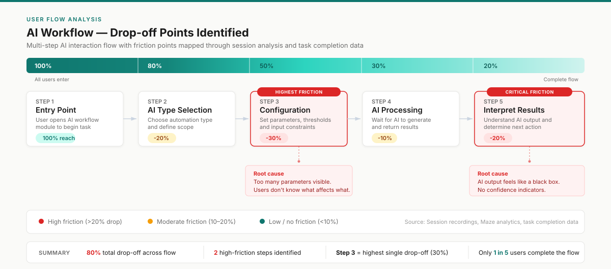
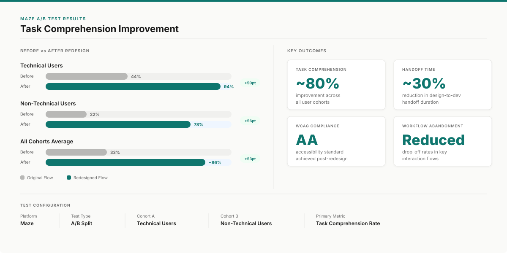
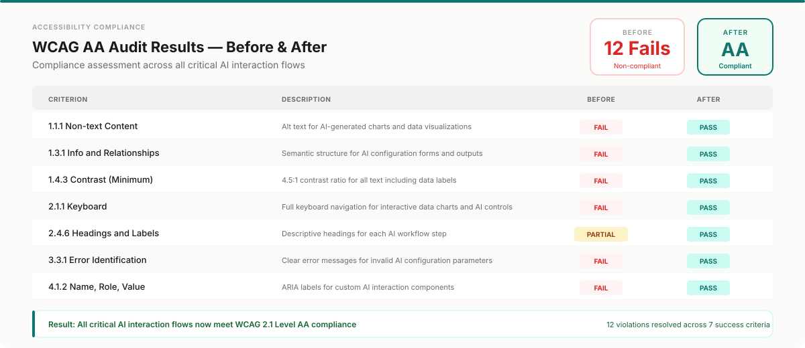
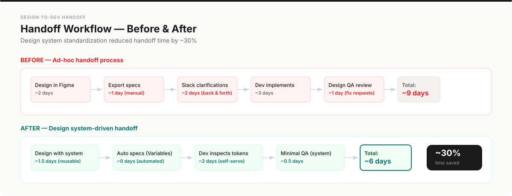

Solving AI — Jun 2024 – Jun 2025
Building a Validation Culture for AI Products
How I established evidence-based design practices, architected a scalable design system, and improved task comprehension by 80% through systematic Maze A/B testing.
Solving AI Autopilot dashboard — the production interface I designed for AI-driven task automation
Node-based workflow builder — visual programming interface for configuring AI automation pipelines
Product demo — hero animation and onboarding flow in action
01
AI products fail when users cannot understand them.
Solving AI was building intelligent automation tools for both technical and non-technical users. The product featured multi-step AI interactions — complex workflows where users configured, triggered, and interpreted AI-generated outputs.
The problem was twofold. First, comprehension failure: users struggled to understand what the AI was doing, what inputs it needed, and how to interpret results. Task comprehension was low, and users abandoned workflows mid-process. Second, decision-making without evidence: design decisions were driven by internal opinions rather than user behavior data. There was no systematic way to validate whether a design change actually improved the experience.
I was brought in to solve both: make the AI interactions understandable, and build the infrastructure to prove it.

User flow analysis: drop-off points identified through session recordings and Maze task data
02
Before redesigning anything, I built the system to measure it.
Establishing A/B testing workflows. My first initiative was not a redesign — it was a research infrastructure. I implemented Maze-based A/B testing with defined user cohorts. Each cohort represented a distinct user segment (technical vs. non-technical, new vs. returning), giving us statistically meaningful data on how different user types experienced the same flows.
Mapping the failure points. Through task analysis and session data, I identified the specific steps in the AI workflow where users dropped off, hesitated, or made errors. The highest friction was in the "configuration" and "results interpretation" phases.
Accessibility audit. I conducted a WCAG compliance assessment across the product. AI products disproportionately exclude users with disabilities — especially in data visualization and error communication. I mapped every violation and prioritized fixes by user impact.

Maze A/B test results: 80% task comprehension improvement validated across user cohorts
03
Simplifying AI without dumbing it down.
Progressive disclosure for AI configuration. I restructured the configuration flow so that basic settings were front and center, while advanced parameters were accessible but not overwhelming. This reduced cognitive load for new users while preserving flexibility for power users.
Transparent AI feedback. Instead of treating AI processing as a black box, I designed inline progress indicators, confidence scores, and natural-language explanations of what the AI was doing at each step. Users could see why the AI made a recommendation, not just what it recommended.
Accessible data visualization. I redesigned charts and outputs to meet WCAG AA standards — adding text alternatives, keyboard navigation for interactive elements, sufficient color contrast, and screen-reader-compatible data tables alongside visual representations.

WCAG AA compliance achieved: 12 accessibility violations resolved across all critical AI interaction flows
04
A system designed to scale — not just to look consistent.
I architected a scalable Figma design system built on three pillars:
Figma Variables — design tokens for color, spacing, typography, and elevation, enabling theme switching and systematic updates across the entire product.
Auto Layout architecture — every component built with responsive Auto Layout, ensuring consistent behavior across breakpoints without manual adjustment.
Atomic Design methodology — atoms, molecules, organisms, templates, and pages — each level documented with usage guidelines, interaction states, and engineering specifications.
The result: design-to-dev handoff time decreased by 30% (from 9 days to 6 days per cycle). Engineers could inspect components and extract specifications without requiring designer clarification on every screen.

Handoff workflow transformation: from ad-hoc process (9 days) to design system-driven (6 days) — 30% faster
05
What the team says.
“Juan took full ownership of the design architecture, from wireframes to final UI, and always approached problems with a user-first mindset that really elevated our products. He wasn't just sending over designs — he was actively involved in shaping the product, open to feedback, and always ready to iterate. If you're looking for a UI/UX designer who can think strategically, design beautifully, and work seamlessly with developers, Juan's your guy.”
“Juan David destaca por su capacidad para transformar ideas complejas en interfaces intuitivas y funcionales. Su enfoque centrado en el usuario, su dominio de herramientas como Figma y su sensibilidad por la estética hacen que cada proyecto gane solidez y coherencia visual. No solo aporta soluciones de diseño de alto nivel, sino también pensamiento crítico, proactividad y pasión por crear experiencias digitales que realmente marcan la diferencia.”
06
Reflection.
If I could do this project again, I would push for quantitative baseline metrics before starting the redesign. We measured improvement, but our "before" data was partially reconstructed from session recordings rather than controlled baseline tests. Starting every project with a measurable benchmark is now a non-negotiable in my process.
This project fundamentally shaped how I approach design: not as an aesthetic exercise, but as a hypothesis to be validated.